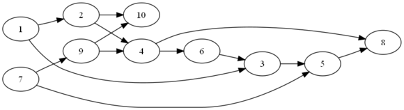
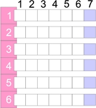
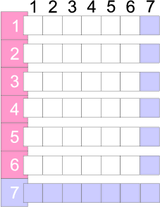

Matica incidencií
V minulom príklade pre topologické triedenie sme používali vlastnú dátovú štruktúru, ktorá umožňovala jednoduché a efektívne vykonávanie operácií nad grafom (hľadanie uzla bez predchodcov, hľadanie nasledovníkov). Graf ako matematická štruktúra má ešte niekoľko ďalších spôsobov reprezentácie v programovacích jazykoch.
Jednou z možností je použitie matice incidencie, čo je tabuľka s n riadkami a stĺpcami (kde n je počet uzlov v grafe). Prvok v r-tom riadku a s-tom stĺpci má hodnotu 1, ak v grafe existuje hrana (teda prepojenie) medzi r-tým a s-tým uzlom.

Matica incidencie pre graf na obrázku má 10 riadkov a 10 stĺpcov.
| 1 | 2 | 3 | 4 | 5 | 6 | 7 | 8 | 9 | 10 | |
|---|---|---|---|---|---|---|---|---|---|---|
| 1 | X | |||||||||
| 2 | ||||||||||
| 3 | ||||||||||
| 4 | ||||||||||
| 5 | ||||||||||
| 6 | ||||||||||
| 7 | ||||||||||
| 8 | ||||||||||
| 9 | ||||||||||
| 10 |
Na obrázku máme napr. hranu z uzla 1 do uzla 2, preto v matici incidencie dáme na 1. riadok a 2. stĺpec značku (napr. X). Ďalšia hrana je medzi uzlom 2. a 4., čiže v 2. riadku a 4. stĺpci je značka. Týmto spôsobom pokračujeme až kým nevyplníme celú maticu:
| 1 | 2 | 3 | 4 | 5 | 6 | 7 | 8 | 9 | 10 | |
|---|---|---|---|---|---|---|---|---|---|---|
| 1 | X | X | ||||||||
| 2 | X | X | ||||||||
| 3 | X | |||||||||
| 4 | X | |||||||||
| 5 | X | |||||||||
| 6 | X | |||||||||
| 7 | X | X | ||||||||
| 8 | ||||||||||
| 9 | X | X | ||||||||
| 10 |
Na tejto matici vieme potom vykonávať rôzne operácie zodpovedajúce veciam, ktoré chceme z grafu zistiť, či ukázať.
Nasledovníci uzla
Počet nasledovníkov uzla vieme zistiť podľa počtu značiek v riadku zodpovedajúcom danému uzlu.
Konkrétnych nasledovníkov uzla zistíme tak, že sa pozrieme do riadku zodpovedajúcemu danému uzlu a tie stĺpce, v ktorých je značka, zodpovedajú uzlom nasledovníkov. Potom je jasné, že uzol bez nasledovníkov má zodpovedajúci riadok prázdny.
V nasledovnej tabuľke nemajú uzly 8 a 10 žiadnych nasledovníkov, uzol s 1 má dvoch nasledovníkov (2 a 3).
Predchodcovia uzla
Ak chceme zistiť počet predchodcov uzla, pozrieme sa na počet značiek v stĺpci zodpovedajúcom danému uzlu. Konkrétnych predchodcov uzla zistíme pohľadom do stĺpca zodpovedajúcemu danému uzlu a riadky, v ktorých je značka, zodpovedajú predchodcom. Uzol bez predchodcov má zodpovedajúci stĺpec prázdny.
V nasledovnej tabuľke nemajú uzly 1 a 7 žiadnych nasledovníkov, uzol 3 má dvoch predchodcov (1 a 6).
Pridanie uzla do grafu
Ak chceme pridať uzol grafu, znamená to pridanie nového riadka a stĺpca do matice.
| 1 | 2 | 3 | 4 | 5 | 6 | 7 | 8 | 9 | 10 | 11 | |
|---|---|---|---|---|---|---|---|---|---|---|---|
| 1 | X | X | . | ||||||||
| 2 | X | X | . | ||||||||
| 3 | X | . | |||||||||
| 4 | X | . | |||||||||
| 5 | X | . | |||||||||
| 6 | X | . | |||||||||
| 7 | X | X | . | ||||||||
| 8 | . | ||||||||||
| 9 | X | X | . | ||||||||
| 10 | X | X | . | ||||||||
| 11 | . | . | . | . | . | . | . | . | . | . | . |
Odobratie uzla z grafu
Odobratie uzla z grafu znamená odstránenie príslušného riadka a stĺpca z matice. S odstránením uzla sa samozrejme odstránia aj hrany vychádzajúce a vchádzajúce do uzla.
Ak odstránime uzol 6, matica sa nám zmenší o jeden riadok a jeden stĺpec.
| 1 | 2 | 3 | 4 | 5 | 6 | 7 | 8 | 9 | 10 | |
|---|---|---|---|---|---|---|---|---|---|---|
| 1 | X | X | | | |||||||
| 2 | X | | | ||||||||
| 3 | X | | | ||||||||
| 4 | | | |||||||||
| 5 | | | X | ||||||||
| 6 | — | — | — | — | — | + | — | — | — | — |
| 7 | X | | | X | |||||||
| 8 | | | |||||||||
| 9 | X | | | ||||||||
| 10 | X | | | X |
Pridanie hrany do grafu
Pridanie hrany medzi dvoma uzlami X a Y znamená nastavenie značky v X-tom riadku a Y-tom stĺpci.
Odobratie hrany z grafu
Odobratie hrany medzi dvoma uzlami X a Y znamená zrušenie značky v X-tom riadku a Y-tom stĺpci.
Implementácia v Jave
Implementácia grafu založeného na matici incidencií v Jave je založená na dvoch triedach: uzle a grafe.
Uzol Uzol je jednoduchá trieda - uzol je charakterizovaný
svojim popiskom.
public class Uzol {
private String label;
public Uzol(String label) {
super();
this.label = label;
}
public String getLabel() {
return label;
}
public void setLabel(String label) {
this.label = label;
}
}
Samotný graf, v tomto prípade s názvom IncidenceMatrix,
triedou obaľujúcou maticu incidencií a poskytujúcou metódy na prácu s ňou.
Maticu môžeme reprezentovať ako zoznamom zoznamov, inak povedané
ako objektom typu List<List<Boolean>. Tento zoznam si možno
predstaviť ako zoznam riadkov v matici, kde každý riadok predstavuje
samostatný zoznam booleovských položiek.
Okrem toho budeme v triede udržiavať samostatný zoznam objektov Uzol.
Objekt typu Uzol v tomto zozname sa nachádza na nejakom indexe.
Napr. desiaty uzol má index 9 a v matici incidencií mu zodpovedá
zoznam s indexom 9, resp. prvky v zoznamoch s indexom 9.
public class IncidenceMatrix {
private List<List<Boolean>> matica = new ArrayList<List<Integer>>();
private List<Uzol> uzly = new ArrayList<Uzol>();
Pridanie uzla do grafu
Ako sme spomínali vyššie, pridanie uzla do grafu zodpovedá pridaniu nového riadka a nového stĺpca. Ako sa to prejaví v prípade zoznamu zoznamov? Rozdeľme si túto operáciu na dva (plus jeden) kroky:
- každý z existujúcich zoznamov predĺžime o jeden prvok - tým pridáme do matice jeden „stĺpec".

- do zoznamu zoznamov pridáme nový zoznam (zodpovedajúci novému riadku), ktorý má dĺžku rovnú aktuálnemu počtu uzlov + 1. (Ak pridávame do matice desiaty uzol, nový zoznam musí mať dĺžku 9 + 1, teda 10.) V každom prvku bude
false.

- do zoznamu uzlov pridajme nový prvok zodpovedajúci aktuálne pridávanému uzlu.
Tomu zodpovedá metóda pridajUzol(), ktorou pridáme uzol do grafu.
public void pridajUzol(Uzol uzol) {
// na koniec kazdeho zoznamu prida *false*
for(List<Boolean> matica : matica) {
matica.add(false);
}
// prida novy zoznam dlzky pocetUzlov + 1 naplneny *false*
List<Boolean> riadok = new ArrayList<Boolean>();
for(int i = 0; i < uzly.size() + 1; i++) {
riadok.add(false);
}
matica.add(riadok);
// prida uzol do zoznamu uzlov
uzly.add(uzol);
}
Odstránenie uzla z grafu
Odstránenie uzla je opačnou operáciou aj v zmysle vykonaných činností.
Pre daný uzol si zistíme jeho index (na to použijeme metódu indexOf()
na zozname java.util.List, ktorá vráti index prvého výskytu daného
objektu v ňom) k. Z matice potom odstránime k-ty zoznam
a z každého zoznamu odstránime k-ty prvok.
protected void odstráňUzol(Uzol node) {
// zisti index daného uzla
int index = uzly.indexOf(node);
if(index == -1) {
// taký uzol nejestvuje, nerobíme nič
return;
}
// z matice odstránime príslušný zoznam
matica.remove(index);
// z každého riadka v matici odstránime príslušnú bunku
for (List<Integer> matica : matica) {
matica.remove(index);
}
// zo zoznamu uzlov vyhodíme daný uzol
uzly.remove(node);
}
Pridanie hrany do grafu
Ďalšou užitočnou operáciou je pridanie hrany medzi dvoma uzlami. V grafickom znázornení to zodpovedá natiahnutiu čiary medzi dvoma „guličkami". Ak máme v grafe dva existujúce uzly C a F, stačí nájsť v zozname uzlov ich zodpovedajúce indexy. Ak má uzol C index 5 a uzol F index 8, hrana medzi uzlami znamená nastavenie značky v riadku s indexom 5 na pozícii osem. To je samozrejme v prípade, že hrany sú orientované - čiže môžeme prejsť z C do F, ale nie naopak. Ak máme neorientované hrany, musíme ju nastaviť aj v opačnom smere, teda aj na riadku s indexom osem na prvku s pozíciou 5.
| 0 | 1 | 2 | 3 | 4 | 5 | 6 | 7 | 8 | 9 | |
|---|---|---|---|---|---|---|---|---|---|---|
| 0 | X | X | ||||||||
| 1 | X | X | ||||||||
| 2 | X | X | ||||||||
| 3 | X | |||||||||
| 4 | X | |||||||||
| 5 | X | X | ||||||||
| 6 | X | |||||||||
| 7 | X | X | ||||||||
| 8 | ||||||||||
| 9 | X | X |
Metóda vyzerá nasledovne:
public void pridajHranu(Uzol node1, Uzol node2) {
// zistíme index prvého uzla
int index1 = uzly.indexOf(node1);
if(index1 == -1) {
// taký uzol neexistuje!
throw new IllegalArgumentException("Uzol v grafe neexistuje! " + node1);
}
// zistíme index druhého uzla
int index2 = uzly.indexOf(node2);
if(index2 == -1) {
// taký uzol neexistuje!
throw new IllegalArgumentException("Uzol v grafe neexistuje! " + node2);
}
// na index1-tom zozname nastavíme hodnotu na pozícii index2 na true
matica.get(index1).set(index2, true);
// pre neorientovane hrany tiez matica.get(index2).set(index1, true);
}
Algoritmus topologického triedenia na matici incidencií
Topologické triedenie
V predošlom článku sme spomínali pekný algoritmus riešiaci problém správneho poradia pri zápise predmetov v študijnom programe nazývaný topologické triedenie.
Algoritmus bol jednoduchý:
- nájdime v grafe uzol bez predchodcov, vypíšme ho. Ak uzol nejestvuje, končíme.
- prejdime zoznam jeho nasledovníkov. Každému nasledovníkovi znížme počet predchodcov o 1…
- … pretože tento uzol bez predchodcov z grafu vyhodíme.
- prejdime na krok 1.
Samotná implementácia v Jave zodpovedá priamo algoritmu:
public void topologickeTriedenie() {
Uzol uzolBezPredchodcov = null;
while((uzolBezPredchodcov = hľadajUzolBezPredchodcov()) != null) {
System.out.println(uzolBezPredchodcov);
odstráňUzol(uzolBezPredchodcov);
}
if(!uzly.isEmpty()) {
throw new IllegalStateException("V grafe sú cykly.");
}
}
Metóda hľadajUzolBezPredchodcov() nájde v grafe uzol, ktorý nemá predchodcov,
teda v matici incidencie má príslušný stĺpec bez značiek (teda sú v ňom samé
hodnoty false). V predošlej ukážkovej tabuľke máme dva uzly bez predchodcov: ich indexy
sú 0 a 7.
// ideme "po stlpcoch" v matici. Pre kazdy stlpec pozrieme,
// ci v nom je *true* prvok. Ak ano, znamena
// vchadzajucu hranu a teda predka. Ak nie,
// mame uzol bez predchodcov, ktory vratime.
for (int i = 0; i < uzly.size(); i++) {
boolean máPredchodcov = false;
for (List<Boolean> riadok : matica) {
if(riadok.get(i) == true) {
// staci napisat if(riadok.get(i)) {
máPredchodcov = true;
break;
}
}
if(!máPredchodcov) {
// v i-tom stlpci je uzol bez predka,
// dohladame v zozname uzlov prislusny objekt
// Uzol a vratime ho
return uzly.get(i);
}
}
return null;
Metóda odstráňUzol(), ktorá odstraňuje uzol z grafu, už bola popísaná
vyššie.
Budovanie štruktúry
Vybudovanie grafu pre topologické triedenie je tiež veľmi podobné klasickému
prístupu popísanému minule. Ak načítavame dvojice prerekvizita -predmet
zo súboru, metóda pridajDvojicu() vyzerá nasledovne:
public void pridajDvojicu(String prerekvizita, String predmet) {
// nájdi v grafe prvý uzol
Uzol uzolPrerekvizity = hľadajPodľaNázvu(prerekvizita);
// ak prvý uzol nejestvuje, vytvor ho a pridaj do grafu
if(uzolPrerekvizity == null) {
uzolPrerekvizity = new Uzol(prerekvizita);
pridajUzol(uzolPrerekvizity);
}
// nájdi v grafe druhý uzol
Uzol uzolPredmetu = hľadajPodľaNázvu(predmet);
// ak druhý uzol nejestvuje, vytvor a pridaj ho do grafu
if(uzolPredmetu == null) {
uzolPredmetu = new Uzol(predmet);
pridajUzol(uzolPredmetu);
}
pridajHranu(uzolPrerekvizity, uzolPredmetu);
}
Metóda na hľadanie uzla podľa názvu je úplne rovnaká ako v prípade vlastnej štruktúry - stačí prejsť zoznam uzlov a nájsť ten požadovaný.
protected Uzol hľadajPodľaNázvu(String nazov) {
// prechádzame zoznam uzlov
for (Uzol uzol : uzly) {
// ak sme našli uzol, končíme
if(uzol.getNazov().equals(nazov)) {
return uzol;
}
}
// uzol sme nenašli, vraciame null
return null;
}